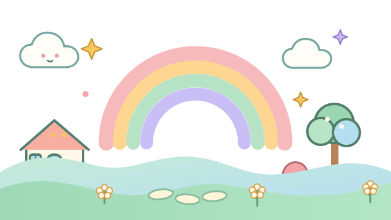

RUANG SELAMAT UNTUK BERCERITA
Tak perlu simpan
semuanya seorang diri.
Kita kenal perasaan, faham apa yang berlaku, kemudian pilih satu langkah kecil bersama-sama.
✦Tak perlu sempurna. Mula dengan apa yang kamu rasa.

Misi kamu hari iniKenal emosi, satu langkah kecil.
01Kenal emosi
02Fahami cerita
03Pilih langkah kecil
Ini ruang untuk kamu. Kamu boleh jawab ikut keselesaan, langkau soalan yang belum sedia dijawab, dan minta bantuan bila perlu.
Ruang sembang Kawan CBT sedia mendengar
Kongsi setakat yang kamu selesa. Jangan masukkan nama penuh atau maklumat peribadi yang tidak perlu.